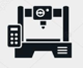

試験器・社内装置
ＰＣから手軽に動作を
試作機開発用にPCから直接モータを接続して
簡単にモータ動作やモニタリングをしたい
CM3+はこんなお困りごとを解決します
試作機の設計にマイコンやPLCを用意したくない
社内検査治具用にPCからモータを制御し、検査結果を記録したい
モータを使ったことがないが、展示用品などをPCから簡単に動かしたい
自分のデスクでモータを動作させたい
PC制御による簡易駆動
PLCを使用する場合
P
L
C
ド
ラ
イ
バ
モータ
部品集め
配線
各機器設定
PLCそのものが高価なだけでなく、部品点数や配線が増える傾向になります。
マイコンを使用する場合

ド
ラ
イ
バ
モータ
開発時間
マイコン制作費用
なんといってもマイコンの開発に時間と費用がかかります。
COOL MUSCLEをPCで接続すると、
3分で動かすことができます。

CM3+
マイコン・ドライバ搭載
サーボシステム
使用するPC環境に制限はありますか？
スマホやタブレットからも動作できますか？
弊社で提供しているソフトウェア 「COOL WORKS QUICK」(無償)はWindows10対応です。
WifiまたはBluetooth通信によるタブレット、スマートフォンからの制御も個別対応となりますが対応できます。
PC制御による多軸駆動
複数軸のモータもPCからまとめて動作させることができます。
各モータに接続するドライバボックスは不要です。
ドライバ不要

モータは何台まで接続できますか？
複数軸接続した場合、通信の遅れはありますか？
最大15軸まで接続可能です。
1 キャラクタあたり約0.3msec通信の遅れがあります。
PC制御によるモニタリング
モータのステータス取得やグラフ描画などモニタリング機能も豊富に搭載されています。


アプリケーション例
ねじ締め耐久試験
| 回数 | 締め付け位置 | 締め付けトルク |
|---|---|---|
| 1回 | 500mm | 50% |
| 2回 | 501mm | 50% |
| 3回 | 500mm | 49% |
| ... | ... | ... |
| 100回 | 499mm | 50% |
指定トルクでの締め付け動作から繰り返し実行、 締め付け内容の記録まで全てCM3+が自動で実行します。
実行回数のカウント
締め付けトルクの記録
締め付け位置の記録
データを取得してエクセル等に書き出すことは可能でしょうか？
モニタリングパラメータを設定することで、一定周期でのデータ出力が可能です。
出力されたデータを自動でエクセルに書き出す機能はありませんが、データ出力はご利用いただけます
エクセルでのデータ分析方法についてはこちらをご参照ください。
お客様専用PCソフトウェア開発
お客様専用のPCソフトウェアはC言語を組むことで簡単に作成していただくことが可能です。
ご要望に応じたPCのソフトウェアの開発サポートも承っております。